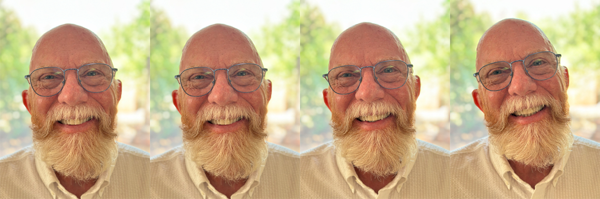

From crisis to cactus.
Retired, Not Expired
I've spent my 50-plus year career helping organizations to be heard and understood clearly when the stakes are high. I've planned, organized, written, and executed annual reports, investor road shows, executive speeches, op-eds, crisis statements, grass-roots and grass-tops legislative campaigns, opinion and reputation research, and scientific presentations — all in situations where every word mattered.
Media, messages, and the art of not panicking
For decades, my world was full of microphones, cameras, deadlines, and the constant buzz of "Don't mess this up." I worked in public relations and crisis management, writing and coaching for leaders who had to walk into the brightest, least-forgiving rooms and actually be human.
It was equal parts language, logistics, and emotional triage. My job was to take complexity, pressure, profit motives, and politics and turn them into something an ordinary person could listen to and think, "Okay, that makes sense, I agree, and will take the actions to support you."
Along the way I built creative projects, public-facing campaigns, and the occasional oddball idea that made people smile instead of cringe.
High stakes, low drama whenever possible.Why retirement doesn't feel like an expiration date
Since 2012, the desert has been both a backdrop and my teacher. It rewards people who pay attention. It demands a slow, deliberate pace and keen observation. I am trying to pay close attention and to STFD (Slow the F*** Down).
These days, I'm more likely to have appointments or "plans" rather than deadlines. My calendar and to-do list are kinder to my psyche. I even have calendar entries now like "change CPAP filter" and "trash day." But the drive to wake up, get moving, and do something useful hasn't changed. Once OCD-adjacent, always OCD-adjacent.
I'm not building a brand here and I have nothing to sell. I'm building a record: of the places and people I care about, and the small, ordinary details that would never make it into a press release. I'm also sharing some projects I've done that have meaning to me and, with luck, at least a few others. When my expiration date does arrive a couple of decades from now, my husband can make the memorial video in a few clicks.
Some of the roles I've played
- Youngest member of the 1968–1969 Cast A of Up With People.
- The eponymous role in The Scottish Play; 42nd Street's Leading Character Actor.
- Pizza and hoagie maker; hospital orderly, ambulance attendant, and discharge cashier; bakery pot-washer and pastry salesman; pipe and tobacco store clerk; salesman for a menswear store; overnight mall cleaning crew member.
- Manager of front-of-house, box office, and promotions for university and summer stock theatres.
- Owner of an independent public relations firm, and SVP of a national agency.
- Consultant in public relations, public affairs, and crisis communications.
- Chaired the group that created the modern-day Examination for Accreditation in Public Relations.
- Docent on the Interpretation Team at Desert Botanical Garden.